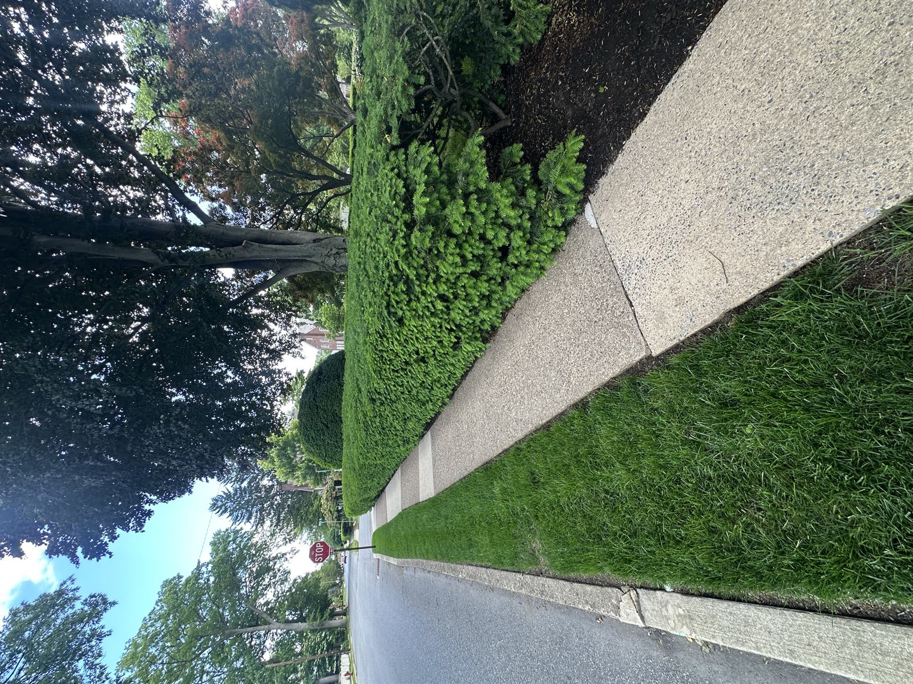

Why Harrisburg Lawns Need a Flexible Approach
"Harrisburg" covers a huge range of lawn realities. A 1,500 sq ft row-home strip in Midtown isn't a Bellevue Park half-acre isn't a Colonial Park three-quarter-acre isn't a Susquehanna Township estate. Most lawn companies run the same five-step program on all of them. That's how you end up overfertilizing a thin city strip and underfertilizing a real suburban lawn.
We size the program to the lot. Some Harrisburg properties get the full five-application rotation; some get spot-treatment + targeted feeds; some are pure organic. Every visit starts with the same person walking the lawn and adjusting from there.


What We Do for Harrisburg Lawns
Fertilization Program
Five-step or three-step granular feeding rotation depending on your lot. Slow-release nitrogen with pH-corrective amendments where soil tests warrant. We don't push growth the roots can't sustain.
Crabgrass Pre-Emergent
Split-application timed to soil temperature, not the calendar. Critical along driveway edges, sidewalk strips, and southern exposures across the City of Harrisburg and the inner suburbs where heat builds up fast.
Broadleaf Weed Control
Spot treatment for dandelion, plantain, ground ivy, clover, creeping Charlie, and the chronic Bermudagrass that creeps into older Harrisburg lots. We don't blanket-spray.
Grub Prevention
One preventive application in June. Especially important in Colonial Park, Lower Paxton, and Susquehanna Township where Japanese beetle pressure is high. Cheaper than the curative treatment plus reseeding the dead patches.
Aeration & Overseeding
Scheduled only during the first weeks of September — the optimal Central PA window — with overseeding using turf-type tall fescue. Single highest-ROI thing you can do for a compacted or thinning lawn. Books up by Labor Day every year, schedule early.
Fully Organic Program
Zero-synthetic option for families that want it. Organic granular fertilizer, corn gluten pre-emergent, mechanical/cultural weed management, beneficial nematodes for grubs. We'll set realistic expectations.
Harrisburg Neighborhoods We Serve
City of Harrisburg row homes and inner-suburb single-family lots (17101, 17102, 17103, 17104, 17109, 17110). Colonial Park, Penbrook, Paxtang, Steelton, Highspire. Lower Paxton Township and Susquehanna Township. Bellevue Park, Boas Heights, Italian Lake, Uptown. Properties along the Susquehanna River corridor and the wooded buffer of Wildwood Park.